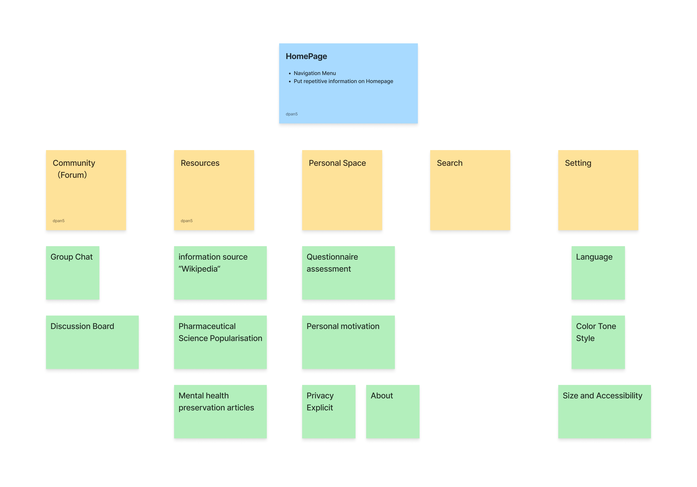

Sitemap
Wellness Community Platform Information Architecture
Card Sorting Process
Based on our user research with Akasha, Denisho, and Fligo, we identified key content areas and organized them through card sorting to create an intuitive navigation structure.
Interactive Site Map
Forum for discussions and chats. Supports community connection and peer support based on user needs for social interaction and shared experiences (Denisho's multicultural support needs, Fligo's peer connection requirements).
Real-time chat functionality for immediate peer support. Addresses Fligo's need for anonymous connection and Denisho's requirement for flexible communication.
Structured forum discussions for deeper conversations. Supports Akasha's preference for slower-paced communication and thoughtful exchanges.
Educational content and information resources. Addresses client need for knowledge sharing and user requirements for accessible, reliable mental health information.
Comprehensive mental health encyclopedia. Supports client goal of empowering users with knowledge and Akasha's preference for detailed, reliable information.
Accessible information about mental health medications. Addresses user need for understanding treatment options and supports informed decision-making.
Evidence-based wellness content. Supports preventive mental health approach and addresses all users' needs for self-care guidance.
Private area for personal wellness journey. Addresses privacy concerns (Fligo's safety needs, Denisho's workplace discretion) while providing personalized support.
Personal wellness evaluation tools. Supports individualized care approach and helps users understand their mental health status safely and privately.
Encouraging content and progress tracking. Addresses user need for positive reinforcement and supports continued engagement with wellness journey.
Clear privacy policies and data protection information. Critical for Fligo's safety concerns and Denisho's workplace discretion needs.